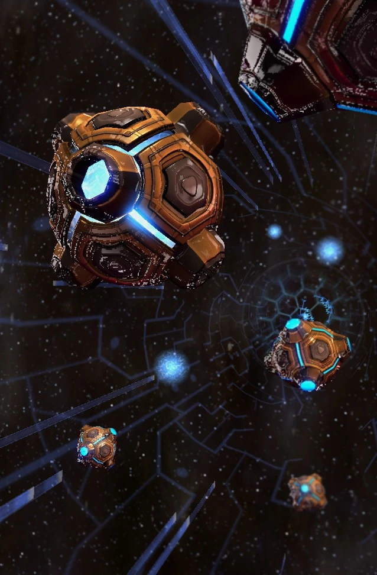

Призма искривления
| Призма искривления | |
|  | |
| Информация о юните | |
| Тип: | Возудшная единица |
| Описание: | Летный транспорт. Может загружать и выгружать юнитов. Также может разворачиваться для создания энергетического поля. |
| Построен из: | Звездные врата |
| Стоимость: |  250 250  0 0  36 36  2 2 |
| Горячие клавиши: | A |
| Статистика юнита | |
| Защита: |  80 80  100 100  0 (+1) 0 (+1) |
| Атрибуты: | Бронированный, механический, псионик |
| Зрение: | 10 |
| Скорость: | 4.13(+1.23) |
| Размер груза: | 8 |
Призма искривления - это бесшовная смесь псионики и робототехники, является преемником шаттла и превосходит его во всех отношениях. Его корпус представляет собой проводящую структуру, которая может поглощать большинство типов энергии, рассеивая энергию входящих ударов по корпусу. В нем находятся тысячи псионических микрорецепторов, которые направляют силу кристаллического ядра призмы и выбрасывают «крылья», наполненные псионической энергией. Его крылья невероятно устойчивы и служат основными навигационными датчиками корабля. Автоматизированный сосуд, призма искривления управляется роботизированным разумом, созданным с помощью псионического производственного процесса. Его программирование встроено в молекулы усовершенствованной кристаллической решетки. Этот «кристаллический компьютер» преодолевает ограничения пространства-времени и существует внутри и вне себя. Это позволяет ему манипулировать материей и энергией с большой точностью, а также обрабатывать почти бесконечные объемы данных быстрее, чем скорость мысли. Они способны путешествовать внутри системы. Несмотря на хрупкость, без них не обходится ни один флот протоссов. Они достаточно малы, чтобы поместиться в ангаре пустотного луча.
Протоссы используют варп-призмы несколькими способами. Основная функция варп-призмы — транспортировка сил протоссов на поле боя. Живые и неорганические объекты преобразуются в энергию, и их уникальная подпись запечатлевается в ядре кристаллической решетки призмы. По достижении желаемого пункта назначения операция меняется на обратную, и сигнатуры сохраненной энергии реконфигурируются в материю вблизи варп-призмы. Подключившись к варп-вратам, он может быстро телепортировать воинов к себе. Второстепенная, но не менее важная функция варп-призмы — служить мобильным фокусом для псионической матрицы протоссов. Открывая сдерживающее поле вокруг своего силового ядра, после развертывания призмы она может питать структуры протоссов вокруг себя. В этой конфигурации варп-призмы можно использовать для временной замены разрушенных пилонов в колонии или для быстрого создания передовой базы операций. Обе эти функции достигаются за счет открытия защитного поля вокруг его синтетического источника энергии. При фазировании варп-призма отводит всю энергию от своих систем, становясь полностью неподвижной.
Функции
Протоссы используют призмы искривления несколькими способами. Основная функция призмы искривления — транспортировка сил протоссов на поле боя. Живые и неорганические объекты преобразуются в энергию, и их физическая сущность находится в ядре кристаллической решетки призмы. По достижении желаемого пункта назначения операция меняется в обратную, и сигнатуры сохраненной энергии реконфигурируются в материю вблизи призмы искривления. Подключившись к варп-вратам, он может быстро телепортировать воинов к себе. Второстепенная, но не менее важная функция призмы искривления — служить мобильным фокусом для псионической матрицы протоссов. Открывая сдерживающее поле вокруг своего силового ядра, после развертывания призмы она может питать структуры протоссов вокруг себя. В этой конфигурации призму искривления можно использовать для временной замены разрушенных пилонов в колонии или для быстрого создания передовой базы операций. Обе эти функции достигаются за счет открытия защитного поля вокруг его синтетического источника энергии. При фазировании призма искривления отводит всю энергию от своих систем, становясь полностью неподвижной.